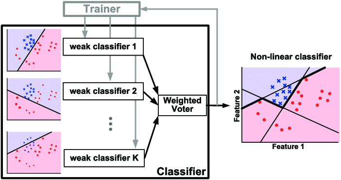

Introduction
- Dark matter makes up 27% of the energy density
and 85% of the matter density of the
universe.
- The Standard Model does not account for dark
matter, a separate dark sector is proposed
- The dark photon is a force carrier for the dark
sector, similar to the photon, interacts via
kinetic mixing
- New particle can be introduced to the standard
model by extending SM gauge group with new
\(U(1)\) gauge symmetry
The Lagrangian
- Dark photon is described by the kinetic mixing
lagrangian:
$$\mathcal{L}_0=-\frac{1}{4}F_{\mu \nu}F^{\mu \nu}
-\frac{1}{4}F'_{\mu \nu}F'^{\mu \nu} +
\frac{\epsilon}{2}F_{\mu \nu}F'^{\mu \nu}$$
$$\mathcal{L}_{int} = e J_\mu A^{\mu} + e' J'_\mu
A'^{\mu}$$
- Where \(F_{\mu\nu}\) and \(F'_{\mu\nu}\) are the
field strength tensors
and \(A_{\mu} \) and \(A'_{\mu}\) are the photon
and dark photon fields
- \(\epsilon\) is the kinetic mixing
parameter
Diagonalizing Terms
-
Need to remove the mixing term so the kinetic
terms only consist of parameters from one field
$$\begin{pmatrix}
A^\mu_a \\
A^\mu_b
\end{pmatrix}
=
\begin{pmatrix}
\frac{1}{\sqrt{1 - \epsilon^2}} & 0 \\
-\frac{\epsilon}{\sqrt{1 - \epsilon^2}} & 1
\end{pmatrix}
\begin{pmatrix}
\cos\theta & -\sin\theta \\
\sin\theta & \cos\theta
\end{pmatrix}
\begin{pmatrix}
A'^\mu \\
A^\mu
\end{pmatrix},
$$
- After this rotation, if the dark photon has
mass, we end up with the Lagrangian containing
this term:
$$\mathcal{L} \supset -\frac{e \epsilon}{\sqrt{1 -
\epsilon^2}} J_\mu A'^\mu \simeq -e \epsilon J_\mu
A'^\mu,$$
-
Based on the equation, the dark photon can
interact with the same particles as a photon
(suppressed by a factor \(\epsilon$\))
-
This portal opens up new interaction/production
channels.
-
- For instance, in meson decays, a neutral pion
\(\pi^0\) can decay into a photon and a dark
photon:
$$\pi^0 \rightarrow \gamma + \gamma'$$
-
The rate of such a process is proportional to
\(\epsilon^2\) \((\approx 10^{-6})\).
-
The dark photon would contribute to missing
energy signatures in experiments.
Machine Learning
Approach
- The goal is to design an algorithm that can
search for dark photons via missing/abnormal
energy signatures.
- A binary classification model can be used to
evaluate a data point if a dark photon is
produced or not.
- Due to the nature of dark photon production, the
resulting dataset will be imbalanced, with a
majority of interaction not producing a dark
photon.
- This imbalance can be accounted for with an
AdaBoost model.

- The AdaBoost model has a set of hyperparameters
(the number of estimators and the learning
rate).
- Tuning the hyperparameters manually can take a
lot of time to approach an optimal
solution.
- An optimal solution to this problem can be
reached with a genetic algorithm.
graph LR
A[Initialize Population] --> B[Evaluate Fitness]
B --> C{Termination Condition Met?}
C -->|No| D[Selection]
D --> E[Crossover]
E --> F[Mutation]
F --> G[Replace Least Fit]
G --> B
C -->|Yes| H[Return Best Solution]